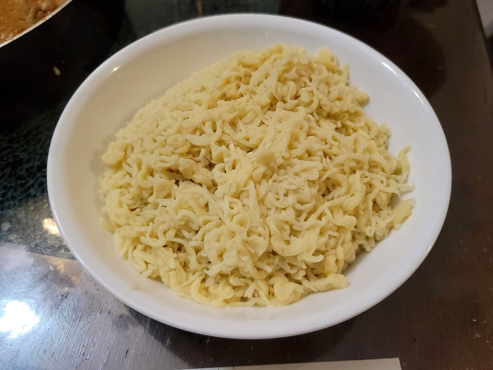

Spaetzle

Ingredients:
- 4 cups (500 g) Flour
- 2 tsp Salt
- 8 eggs
- 3/4 cup Milk
Instructions:
- Add the ingredients to the mixing bowl of a stand mixer. Let mix on medium-low speed until well combined. Then let rest for about 10-15 minutes.
- Bring a pot of salted water to a boil. Using a spaetzle maker or a large holed colander, press the batter through the holes of the device and into the boiling water. Let cook for 2-3 minutes and then strain from the water.
- Serve immediately with some butter or sauté them for crispy spaetzle.